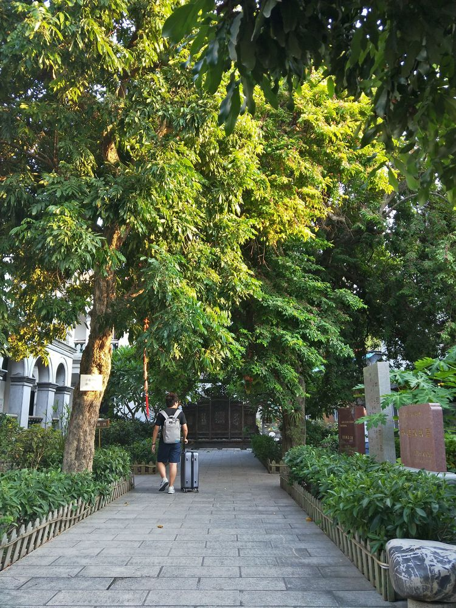
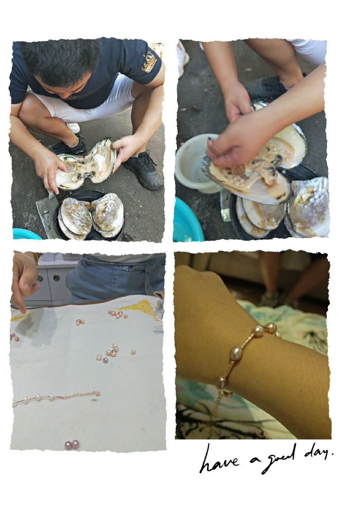

(本打算去成都，阴差阳错的选择了厦门，还好去了一趟厦门，感受到了如诗画般美丽的城市）之前的每次出行，都会做好计划、攻略，各种准备。这次因为前期事情太多，以至于啥都木有准备，临出发前几个小时匆匆忙忙把行李收好，带上我的大政哥就出发了。虽然没有准备，但还是玩的很high，一切都是刚刚好...
必须先夸夸大政哥，从出行前的订机票、订酒店、时间规划。到达之后，既当人工导航，又当摄影师（虽然技术还有待提高）和搬运工，对于一个不热爱旅游的人来说也算是尽力了
晚上到达之后先来撸个串，喝个厦门啤酒，解解乏。
第二天来到了第八海鲜市场，厦门当地人比较热爱的海鲜市场，在这里感受到了老厦门的味道，各种不认识的海鲜，各种老字号的小吃店和水果铺……
下午早早的来到了码头等待轮船的到来……船票是之前在网上订好的，幸亏有一天无意间看到网上说十一期间，鼓浪屿的门票不现场售票，提前在网上买好，这也是唯一一个提前做打算的事儿。那时候买票已经只有下午的班次了，上午全部销售一空。
一进入岛上，就被岛上的景象美到了。脑海中浮现出海子的那一首诗词…从明天起，做一个幸福的人；喂马，劈柴，周游世界；从明天起，关心粮食和蔬菜；我有一所房子，面朝大海，春暖花开…
鼓浪屿就是一个充满诗情画意的地方，四周环海，绿色葱茏，红瓦绿树，错落有序。岛上不允许汽车出行，只有电车和自行车，没有污染，空气中散发着树木花草的清香。
都是酒店的景色，不是植物园哈
被各种琳琅满目的店铺所吸引，每家的店面都装饰的好精致。
第三天接着暴走鼓浪屿。跟于先生两个人早早起来，绕着小岛暴走了一上午，路上也遇到了好多年轻的小情侣，手拉手，满脸开心的样子，跟自己喜欢的人一起漫步在这么文艺的地方，简直不要太浪漫。
第一次见到太阳花!
岛上的建筑 -- 菽庄花园。
鼓浪屿上开了一个蚌！开出了好多漂亮颜色的珍珠，好稀罕！
下午在中山路附近游荡了一圈，跟上海的南京路差不多，晚上景色比较美，人很多，白天游客还不算多。
来厦门必吃的小吃，刚吃味道还可以，吃了两顿之后，就开始想念家乡饭了，呵呵。
来厦门一定要尝尝各种各样热带水果，这几天吃的最多的就是水果了！小菠萝、大芒果、龙眼、黄金果自认为是最好吃的！
路边的小哥哥送的！
第四天我们跟了当地团，一日游玩了福建的土楼——云水谣。这里跟城市的喧嚣截然不同，它有着一种纯朴宁静的美。经过岁月的洗礼，充满了故事感……
见到了百香果、火参果的种植园。还有一颗巨大的板栗树（这里的板栗个大，皮薄，肉很饱满，也很甜糯）好吃！
实在忍不了了，需要吃点辣的压压嗓子！

第五天，游荡着买了点小特产打道回府。如果有机会还想再到鼓浪屿上玩玩，静静的看着人来人往，喝个咖啡，发会儿呆，思考一下人生，甚是美好呢！
面朝大海，春暖花开...